The Odin Project
The Odin Project- janice-lok/calculator
Built UI for an on-screen calculator with ability to perform basic math operations and populate numerical solutions in the display.
- HTML
- CSS
- Javascript
 The Odin Project
The Odin ProjectBuilt UI for an on-screen calculator with ability to perform basic math operations and populate numerical solutions in the display.
The Odin ProjectCreated browser version of a grid sketchpad with ability to leave pixelated trail through the grid ("pen effect") and generate a new sketchpad.
NOWPAIN ClinicConstructed and stylized a user-friendly locally-hosted website for clinic receptionists to update patient information and book appointments.
Built and styled a personal website (the one you're browsing right now!) to showcase professional strengths and coding projects.
NYU TandonDesigned an application package with UI and control algorithm to rapidly and accurately simulate performance curves for a chemical engineering flow control system.
ConEdison CEBAutomated data compression analysis for sets of 100 time-series data points using Python pandas. Integrated swinging door algorithm to return two compression parameters per data point.
 Python
Python HTML
HTML CSS
CSS Javascript
Javascript SQL
SQL React.js
React.js Git
GitAs a recent graduate from NYU with a background in chemical engineering and past internship experience in data management, there are many soft skills that I bring with me to the tech industry:
As chemical engineering is also a highly collaborative field, I have frequently worked with a vast range of people, from peers to superiors, to tackle problems and deliver quality solutions, not only in coursework but also in internship and research experiences.
Chemical engineering has given me the perspective of seeing things as (often complex) systems. As a result, I am well-conditioned in defining and understanding problems, thinking logically and structurally through them, and developing effective solutions.
During my time at NYU, I took a writing course for engineers where I first learned about (and practiced) communicating technical topics to a lay audience through mediums such as video abstracts, popular science articles, etc.
As my internship focused on data management, I have exposure to managing workflow in an Agile environment, using tools such as Kanban boards and participating in daily stand-up meetings.
In addition to using MS Office Suite during my internship, I have worked with a variety of technologies and programs (i.e. MATLAB, Aspen) to aid problem-solving for chemical engineering applications.
As managing deadlines and multiple projects/tasks have inevitably been a part of my academic studies and internship work, time management and workload prioritization are valuable skills that I have continuously honed over the course of my undergraduate career.
I'm Janice Lok, an aspiring front-end developer based in NYC. I'm excited about front-end development because of the opportunity to not only work on real-world applications with my detailed and structured approach, but also to create visual, user-friendly products as a highly visual person. I graduated from NYU with a background in chemical engineering. My hobbies include playing volleyball, weightlifting, and photography. (See more below!)
Check out these photos I took with my camera when I was traveling in San Francisco (2022) and Japan (2023)!
 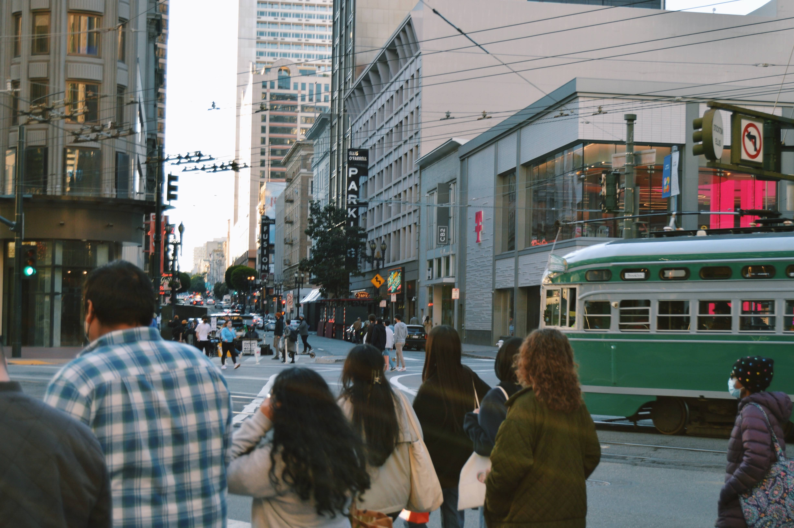
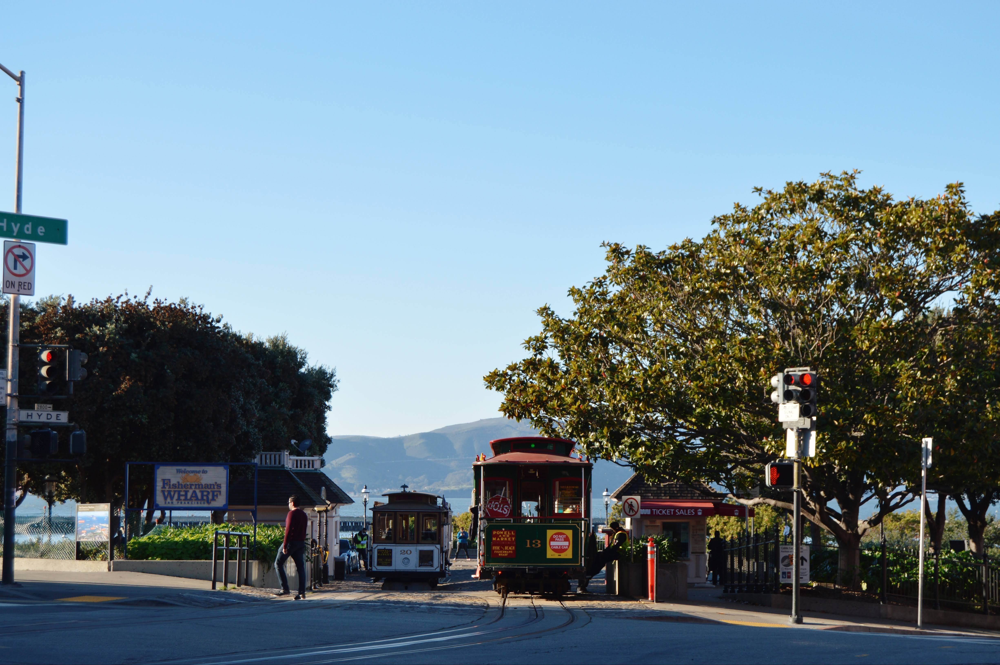
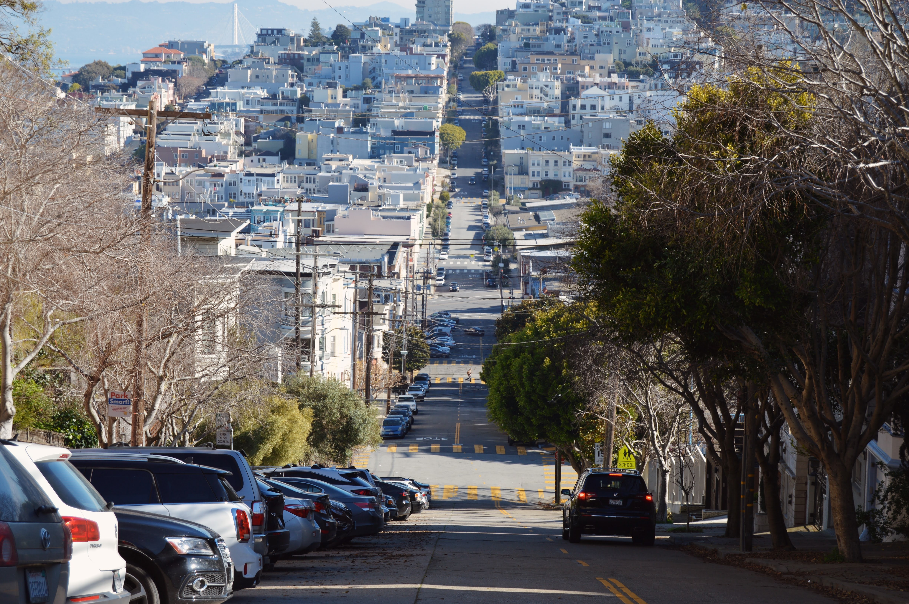
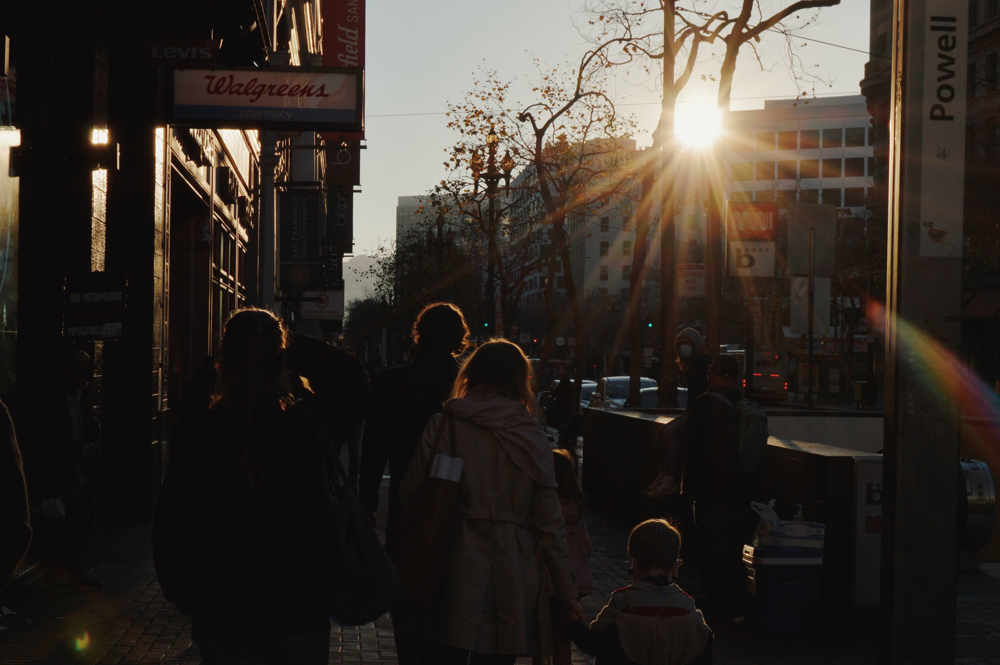
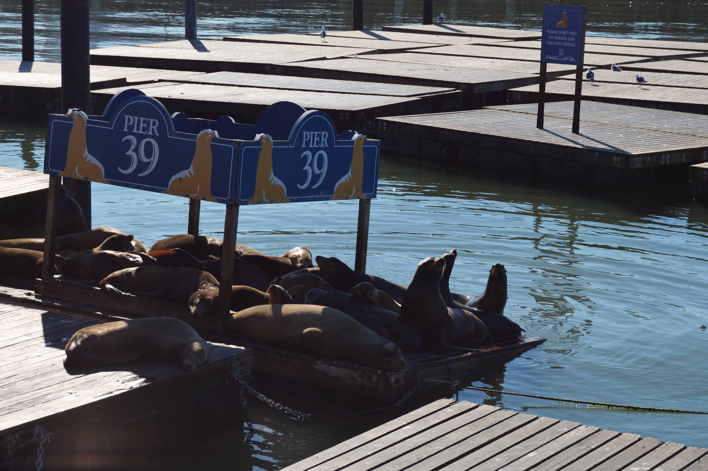
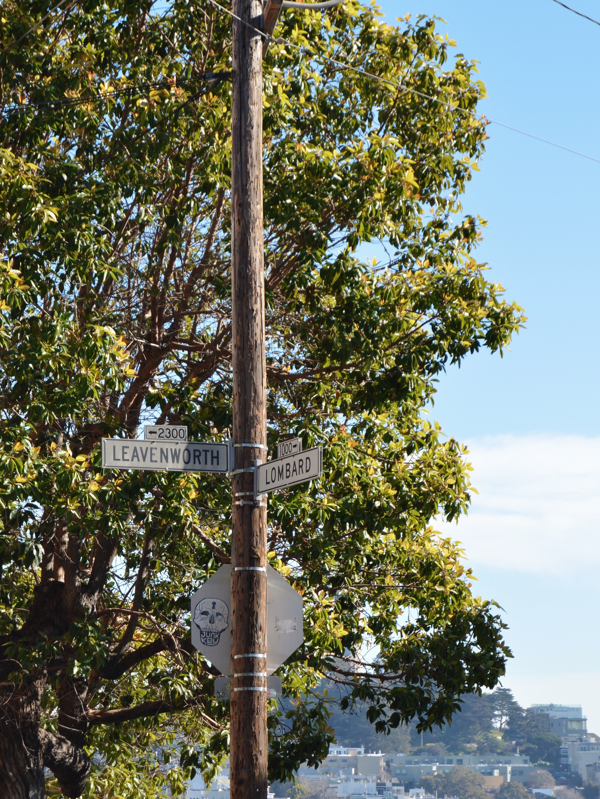
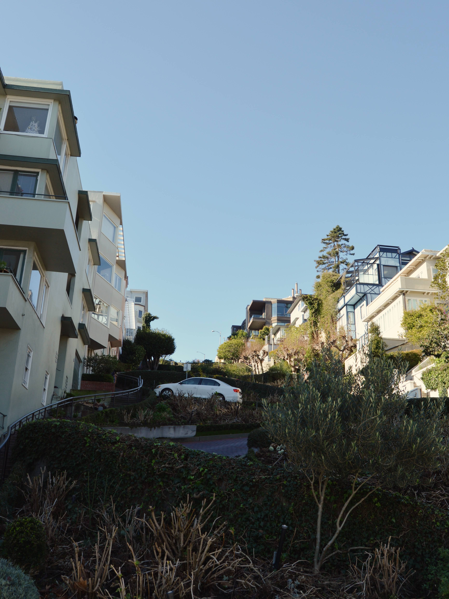
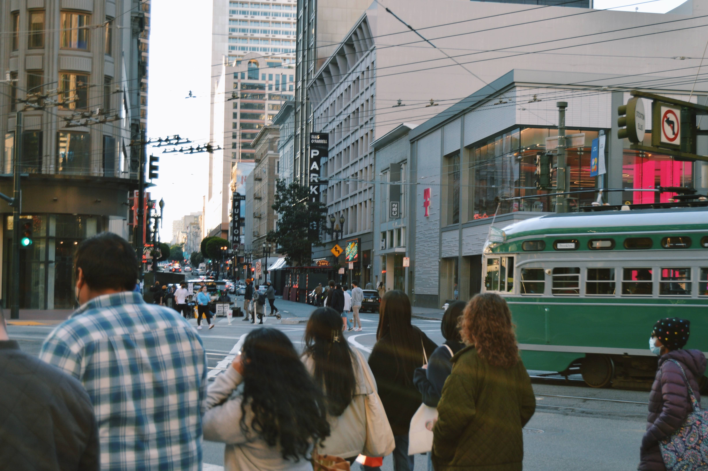
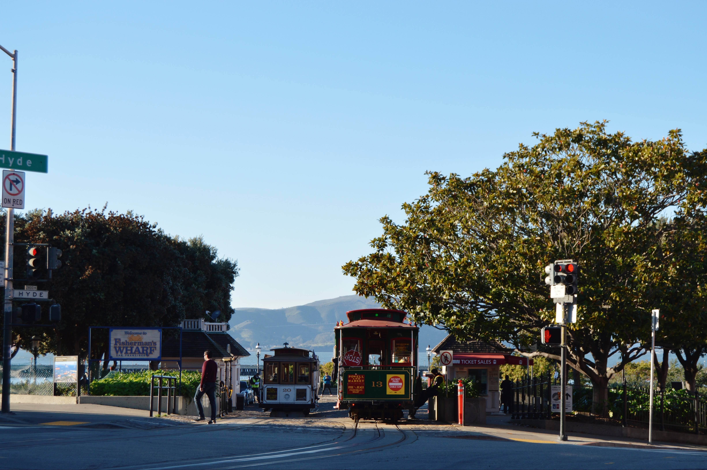
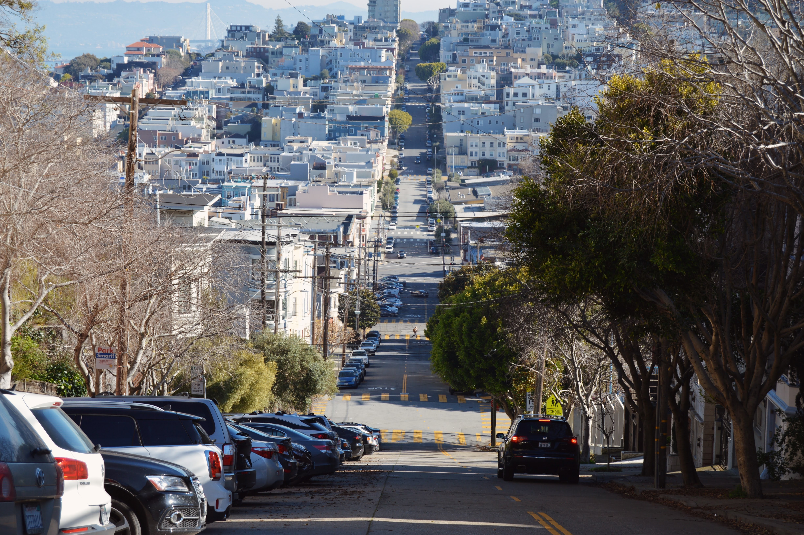
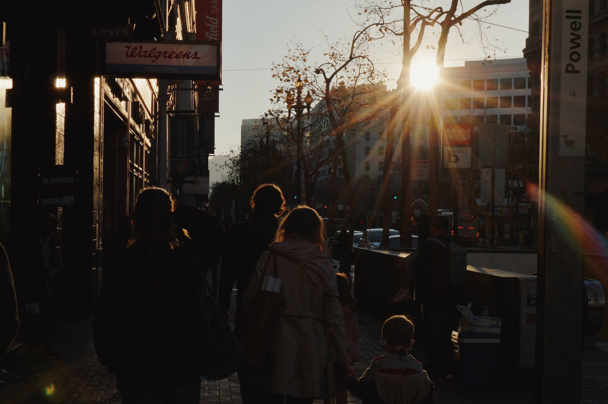
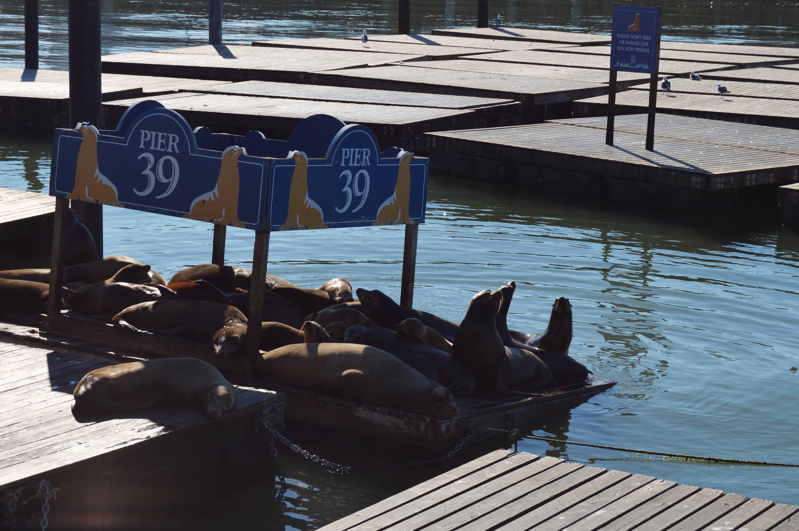
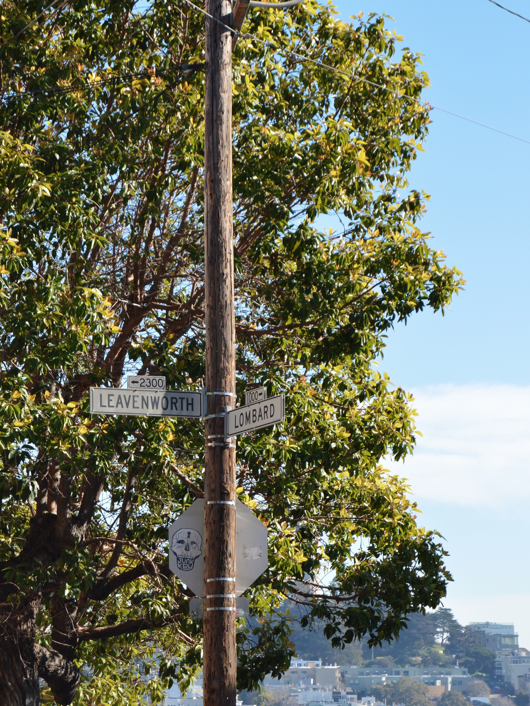
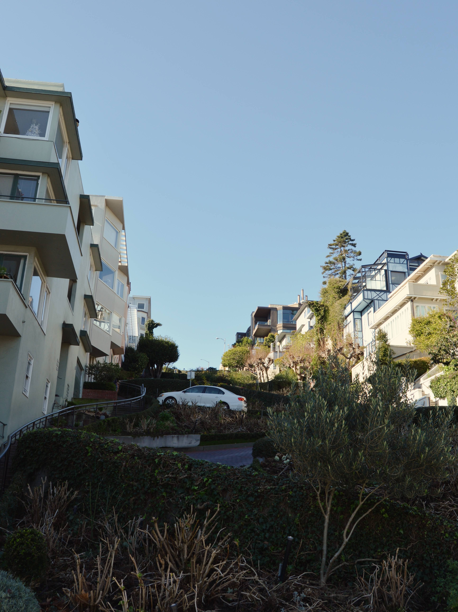
And here's a picture (taken on a friend's film camera) of me and my friends playing grass volleyball during the summer season.
{kind=link}
{kind=link}
{kind=link}
{kind=link}
{kind=link}
{kind=link}